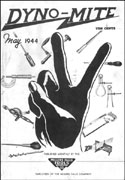
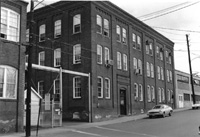
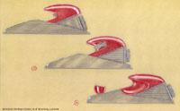
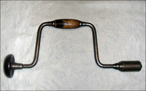
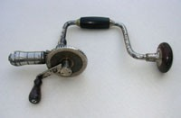

 The Millers Falls Company's employee magazine was named Dyno-Mite. The title makes reference to what was then the company's proprietary name for its power tools. Many of the wartime issues feature patriotic themes or humor, and news and letters from former employees stationed overseas were staple features. A selection of the magazine's covers can be seen in this small gallery. A glimpse through the issues published during the WWII era reveals a work force that was intensely patriotic and filled with pride in its war efforts and in the quality of its products.
Consisting, for the most part, of gossip, family news items, and safety information, for much of its life, the magazine was divided into two parts—one covering events at the Greenfield plant and one covering the plant at Millers Falls. Dyno-Mite began publication in 1939 and continued until at least 1967.
Images of covers by Randy Roeder.
 In 1975, Millers Falls Company president James M. Mitchell asked his son Monty to serve as photographer for an off-hours tour of the operation's Greenfield factory. The Greenfield site had been developed by the Goodell-Pratt Company in the early decades of the twentieth century and was acquired by Millers Falls when the companies merged in 1931. After the merger, the Greenfield plant became the Millers Falls Company's headquarters, and by the time of Mitchell's presidency, Millers Falls had become a subsidiary of Ingersoll-Rand. Mitchell hoped that the photos of the rundown plant would persuade the parent company's management that a new factory was needed. The fifty-one photos taken that day photos tell much about the condition of the plant just prior to its closing. A selection is presented here.
All photos are courtesy James Mitchell.
 L. Garth Huxtable was a successful and talented free-lance industrial designer who worked for the Millers Falls Company from 1948 to 1970. He graduated from the Massachusetts School of Art in 1933 and went on to apprentice with some of the most prominent designers of the time—Norman Bel Geddes, Egmont Arens, Albert Kahn and Benjamin Webster. Huxtable's work for Millers Falls resulted in a number of excellent tools.
The L. Garth Huxtable Gallery includes a representative sample of finished renderings, drawings, photographs and catalog illustrations. The illustrations are courtesy of Ada Louise Huxtable and the American Heritage Center at the University of Wyoming in Laramie.
 After leaving the Millers Falls Mfg. Company, Charles H. Amidon continued to design and manufacture braces. In 1870, he founded the Amidon Manufacturing Company in the village of Millers Falls. (Amidon Manufacturing made baby carriages as well as bit braces.) The tool-making part of the operation eventually became the Amidon Bit Brace Company--possibly as the result of a fire that burned out the carriage part of the operation. In 1877, Amidon relocated to Buffalo, New York, where he became involved in the following businesses: Saxton & Amidon (1877-1883), Amidon & White (1883-1887), Amidon & Bastedo (1887-1892), and the Amidon Tool Corporation (1893). Most of the braces manufactured during Amidon's years in Buffalo were mid-priced tools.
Includes photos by Randy Roeder and the late Charles R. Wright.
 Quimby S. Backus invented vises, bit braces, plumbing cabinets and heating devices. The founders of the Millers Falls Mfg. Company invested heavily in his vise manufacturing operation and arranged to relocate the business to a site on the Millers Falls canal at Grout's Corner. In 1873, the businesses merged to form the Millers Falls Company, and Backus moved on to Winchendon and Holyoke, Massachusetts, were he operated factories that produced bit braces and brace-like tools. This gallery includes photos of braces and tools manufactured at the two locations. In the mid-1880s, the inventor's interests shifted to the design and manufacture of plumbing and heating devices. Backus retained the rights to his patents but in 1889, contracted production out to the firm of Mason & Parker in Winchendon.
The gallery includes copies of advertisements that show the effect of a series of patent infringement suits on the Backus product line. The ads are courtesy of Brian Welch; the photographs are by Randy Roeder.